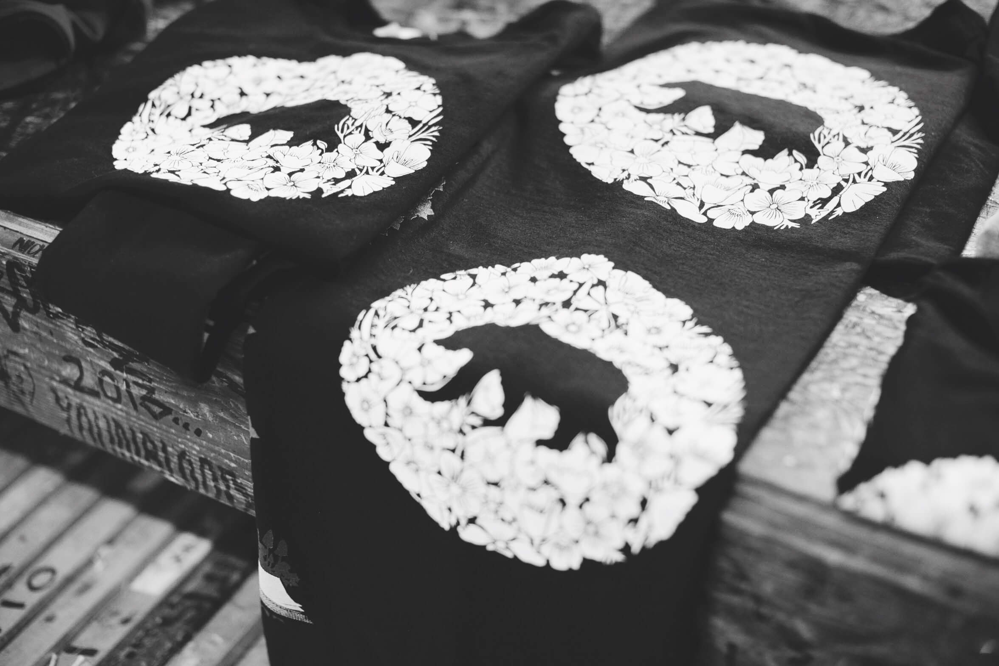
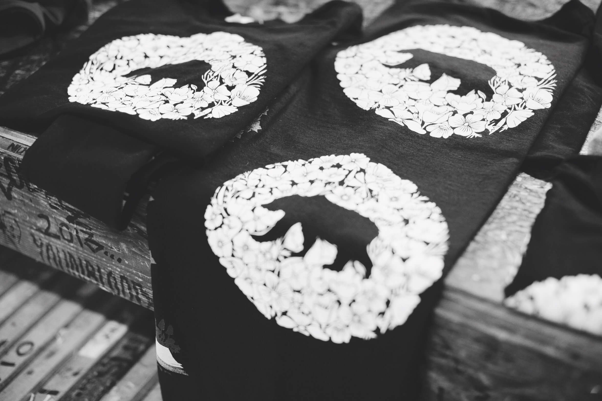

001
The Golden Bear
This design is all about the resilience of California to overcome difficult situations and come out stronger than before. It’s a flip of the UNC Tarheel mascot with added elements like the California poppy.